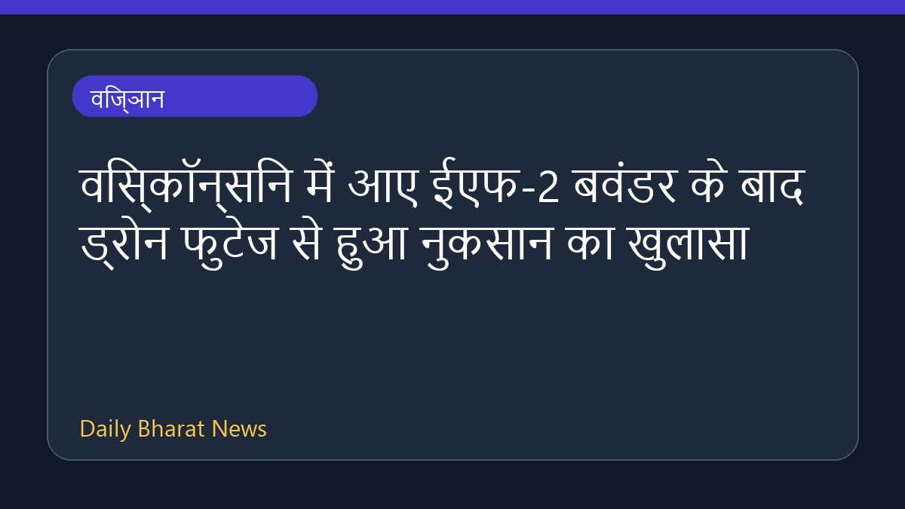

विस्कॉन्सिन में आए ईएफ-2 बवंडर के बाद ड्रोन फुटेज से हुआ नुकसान का खुलासा

मिडवेस्ट राज्य विस्कॉन्सिन के कुछ हिस्सों में एक ईएफ-2 बवंडर के टकराने के बाद ड्रोन फुटेज सामने आई है, जिसमें बवंडर से हुए नुकसान को दिखाया गया है। राहत की बात यह है कि इस प्राकृतिक आपदा के तुरंत बाद किसी भी प्रकार की जनहानि या किसी के घायल होने की कोई तत्काल सूचना नहीं मिली है। संबंधित अधिकारी स्थिति पर नजर बनाए हुए हैं और घटना से जुड़ी विस्तृत जानकारी अभी सीमित रूप में ही उपलब्ध कराई गई है।
मूल स्रोत: BBC Science
Drone footage shows Wisconsin tornado damage ↗
Drone footage shows Wisconsin tornado damage ↗